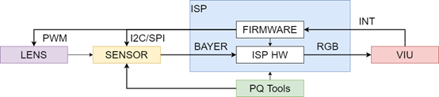
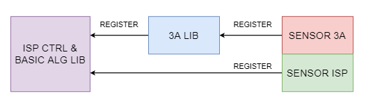
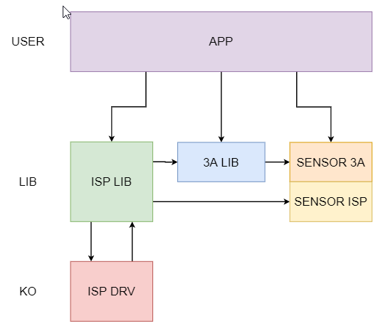
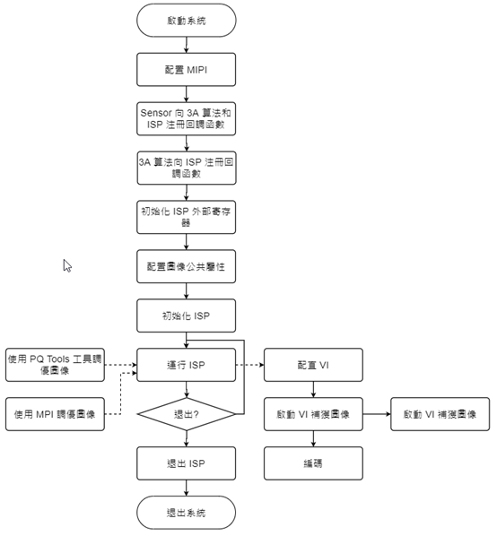

2. Overview¶
2.1. Overview¶
This document introduces the ISP user interfaces. It is divided into three parts: system control, 3A, and ISP modules. The first part explains how to control the ISP middleware. The second part explains how to control AE, AWB, and AF; most functions in this part can be debugged using Cvi PqTool. The third part covers the ISP modules, including Black Level Cancellation, Color Correction Matrix, Gamma, Noise Reduction, and Sharpening. Most functions in this part can also be debugged using Cvi PqTool.
2.2. Functional Description¶
ISP Controlstructuresuch as Figure 2.1 as shown
Lens - focuses incoming light and projects it onto the sensor's photosensitive area.
Sensor - converts the light electrically and sends the Bayer-format raw image to the ISP.
ISP - the firmware running on the ISP processes ISP logic, controls the lens and sensor, and provides automatic aperture, automatic exposure, and automatic white balance. The firmware is driven by interrupts from the video capture unit. PQ Tools adjusts ISP image quality online through an Ethernet or serial connection and outputs the YUV-domain image to the downstream video capture unit.

Figure 2.1 ISP ControlstructureDiagram¶
For the main ISP logic flow, detailed concepts, and functional points, see the processor manual.
2.3. Architecture¶
ISP firmware consists of three parts. The first part is the ISP control unit and basic algorithm libraries. The second part is the 3A algorithm library, which currently includes AE and AWB. The third part is the sensor library. The architecture separates these three parts and uses registered callbacks so they can evolve independently. For example, a developer can implement a custom 3A function with the same interface and register it to replace the default Cvi 3A library. The ISP firmware architecture is shown in Figure 2.2.

Figure 2.2 ISP firmware Architecture¶
Each sensor registers its control functions with the ISP algorithm library through callbacks. When the ISP control unit schedules the basic and 3A algorithm libraries, it obtains initialization parameters through these callbacks and controls the sensor, for example by adjusting analog gain, digital gain, and exposure time.
2.4. Development Mode¶
The SDK supports several development modes.
When using the CVITEK Intelligent 3A algorithm library, the user adapts different sensors through the sensor adaptation interfaces provided by the ISP basic and 3A algorithm libraries. Each sensor has a corresponding directory containing two main files:
sensor_cmos.c
This file implements the callback functions required by the ISP and contains the sensor adaptation algorithm. The implementation may differ between sensors.
sensor_ctrl.c
This is the sensor low-level control driver. It mainly implements sensor read, write, and initialization operations.
To support multiple sensors simultaneously, the two filenames include the sensor model. For example, the Sony IMX307 files are named imx307_cmos.c and imx307_ctrl.c.
The user can develop these two files according to the sensor datasheet and can contact the sensor vendor for support when necessary.
The user can also develop a custom 3A algorithm library through the 3A algorithm registration interfaces provided by the ISP library. The custom library must adapt different sensors through the sensor adaptation interfaces provided by the ISP basic algorithm library and the user's 3A algorithm library. The user may use part of the CVITEK Intelligent 3A algorithm library and implement the rest. For example, AE may use the CVITEK Intelligent AE library libae.a, while AWB uses a custom libawb.a.
2.5. Internal Flow¶
Firmware Internal Flowparttwopart, such as Figure 2.3 as shown. onepartisInitializetask, mainlycomplete ISP Controlunit Initialize, ISP basicalgorithm library Initialize, 3A algorithm library Initialize, includecall sensor callbackGet sensor differencetransform Initializeparameternumber; anotheronepartisdynamicAdjustprocess, in thisprocessin, firmware in ISP Controlunitschedule ISP basicalgorithm libraryand 3A algorithm library, real-timecalculateandperformcorrespondingControl. Firmware softwarecomponentstructuresuch as Figure 2.4 as shown.

Figure 2.3 ISP firmware Internal Flow¶

Figure 2.4 ISP firmware softwarecomponentstructure¶
2.6. Software Flow¶
softwarecomponentuseflowsuch as Figure 2.5 as shown.
PQ Tools toolmainlycompletein PC endperformdynamicimagequalityamountAdjust, canAdjustmultipleaffectsFigure imagequalityamount becausesub, such asnoise reductionstrength, colorconversionmatrix, saturationetc..

Figure 2.5 softwarecomponentuseflow¶
ifuserDebuggoodimageeffectafter, canuse PQ Tools toolprovide configurationdocumentcomponentsavefunction performconfigurationparameternumber save. inundertimestartwhensystemsystemcanuse PQ Tools toolprovide configurationdocumentcomponent loadfunctionloadalreadythroughAdjustgood imageparameternumber.